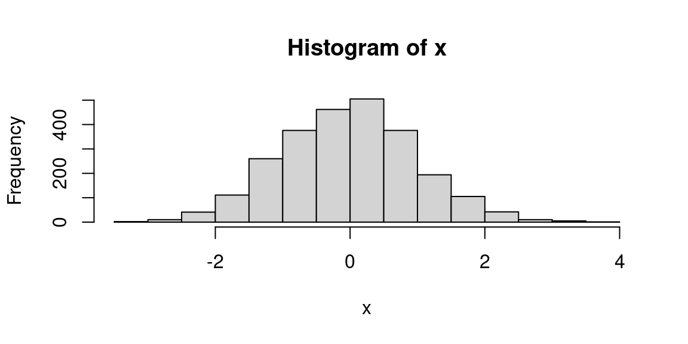
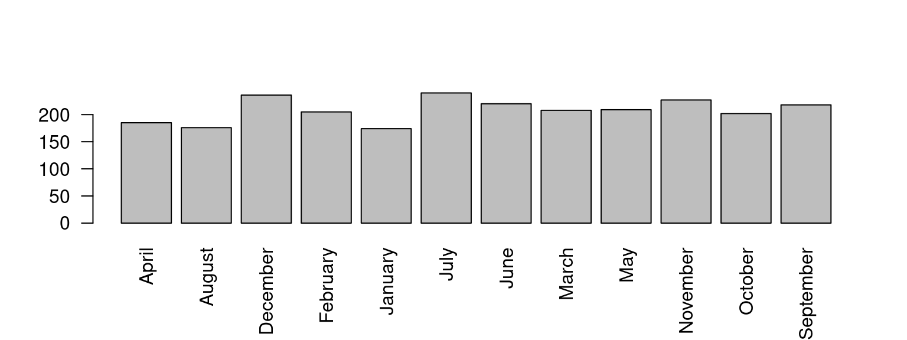
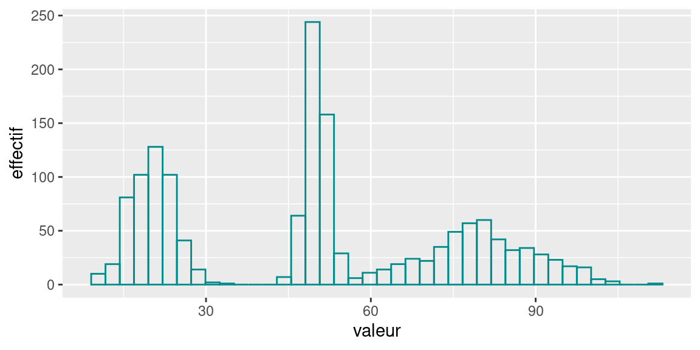
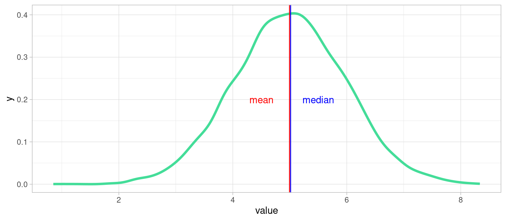
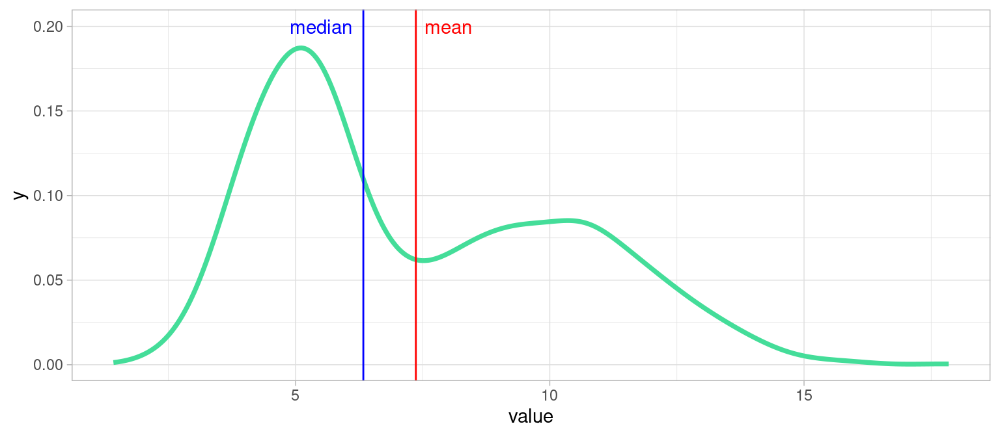
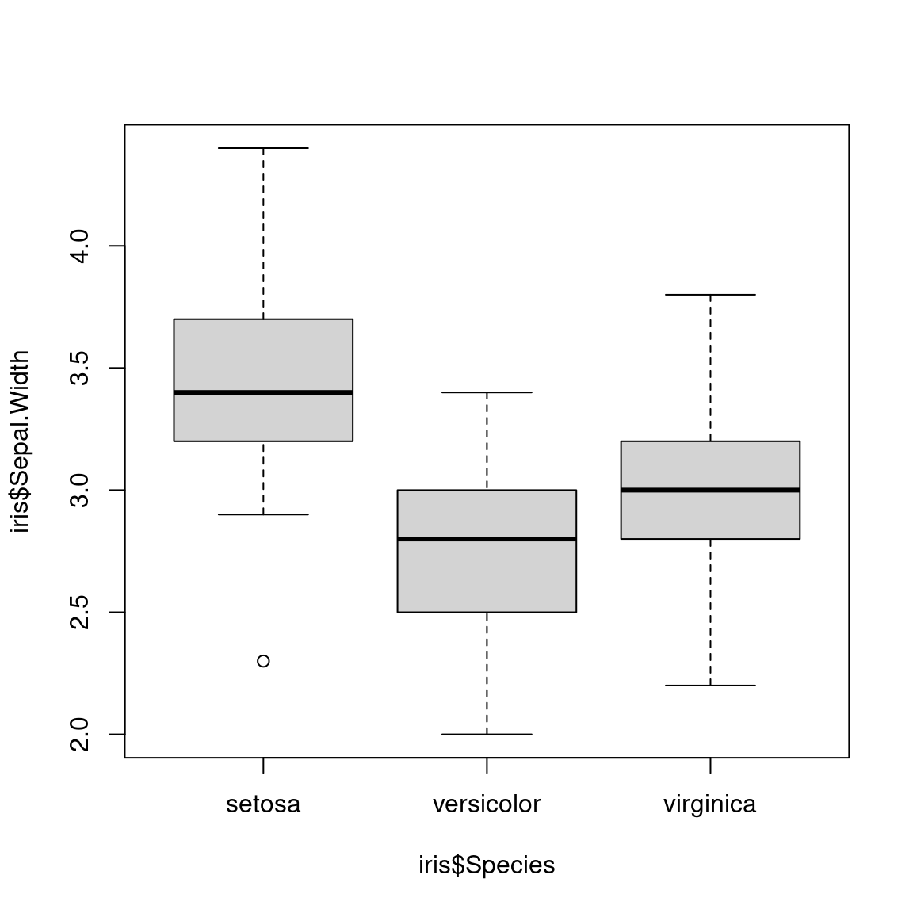
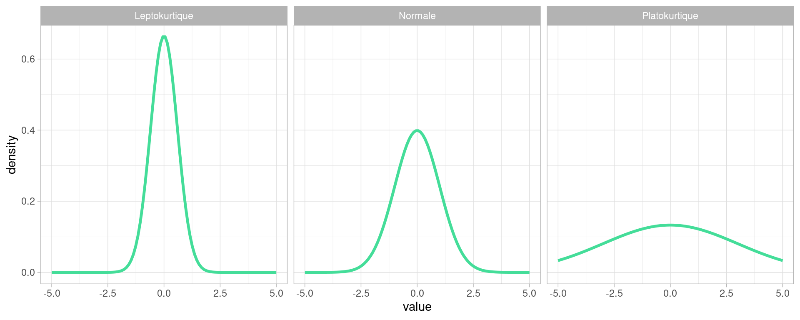

Chapitre 2 Analyse Univariée
2.1 Le concept de distribution
L’analyse univariée a pour but de décrire et mesurer la répartition des valeurs que peut prendre une variable.
On appelle la répartition des valeurs d’un variable sa distribution , que l’on peut très approximativement voir comme son «histogramme en continu».
Voilà une distribution d’une variable réelle (courbe noire), superposée à son histogramme :

Vous pouvez voir avec cet exemple, que la courbe suit les variations de hauteur des colonnes de l’histogramme, tout en lissant les aspérités.
C’est de cette courbe que l’on parle lorsqu’on évoque la distribution de la variable. (Il serait plus rigoureux de parler de courbe de densité de probabilité.)
Plus précisément, la distribution représente des probabilités (ou des densités de probabilité), et non des effectifs. En toute rigueur , représenter une courbe de distribution de probabilité par dessus un histogramme est impropre : il faudrait deux axes des ordonnées: un pour l’histogramme, représentant un effectif, l’autre pour la distribution , représentant une probabilité (variable à valeurs discrète) ou une densité de probabilité (variable à valeurs réelles)
Formellement, pour une population donnée, la distribution d’une variable \(V\) peut être définie comme une fonction qui donne la probabilité qu’un individu \(x\) pris au hasard dans la population ait la valeur \(V_x\) pour la variable \(V\) : =======
Chapitre 3 Analyse Univariée
======= >>>>>>> refs/remotes/origin/gh-pages3.1 Le concept de distribution
L’analyse univariée a pour but de décrire et mesurer la répartition des valeurs que peut prendre une variable.
On appelle la répartition des valeurs d’un variable sa distribution , que l’on peut approximativement voir comme son «histogramme en continu».
Voilà une distribution d’une variable réelle (courbe noire), superposée à son histogramme :
Vous pouvez voir avec cet exemple, que la courbe suit les variations de hauteur des colonnes de l’histogramme, tout en lissant les aspérités.
C’est de cette courbe que l’on parle lorsqu’on évoque la distribution de la variable.
<<<<<<< HEADPlus formellement, pour une population donnée, la distribution d’une variable \(V\) est définie comme une fonction qui donne la probabilité qu’un individu \(x\) pris au hasard dans la population ait la valeur \(V_x\) pour la variable \(V\) : >>>>>>> refs/remotes/origin/gh-pages \[distribution(V) \equiv P(V=V_x), \forall V_x \in \Omega_V\] avec \(\Omega_V\) l’ensemble des valeurs que peut prendre \(V\) : l’univers de \(V\). Lorsque la variable prend des valeurs réelles, on parle de densité de probabilité, c’est pourquoi on retrouve ce terme “density” sur les axes des ordonnées dans les graphiques de distribution.
La forme d’une distribution donne beaucoup d’informations sur les valeurs d’une variable dans une population :
- valeurs les plus représentées dans la population : les “pics”
- présence de valeurs extrêmes : la courbe de la distribution est tirées à gauche ou à droite du graphique
- caractéristiques de sa forme : symétrie, aplatissement etc…
Dans notre exemple de distribution de longueur de nageoires en millimètres, on observe deux pics assez doux : l’un aux alentours de 190mm, l’autre de 215mm. On peut l’interpréter ainsi : «la valeurs la plus représentée dans les longueurs de nageoires de cette population de pingouins est de 190mm, suivie de 215mm»
<<<<<<< HEAD2.1.1 Interpréter la courbe de densité
L’histogramme représente l’effectif de la population en fonction de classes de valeur d’une variable, son interprétation est directe et aisée puisque ce graphique donne une représentation du nombre d’individus par intervalles de valeurs.
La représentation d’une densité est légèrement plus délicate à comprendre mathématiquement. En première approximation , vous pouvez l’interpréter comme un histogramme dont les barres seraient infiniment fines, et dont l’axe des \(y\) représenterait une probabilité au lieu d’un effectif.
La densité de probabilité comme son nom l’indique, représente des probabilités: celles d’obtenir, pour un individu dans la population, une certaine valeur de la variable.
Le point délicat est qu’une variable continue (i.e. définie sur un intervalle de \(\mathbb{R}\)), peut prendre une infinité de valeurs possibles, et que la probabilité d’obtenir exactement, c’est à dire avec une précision infinie, une valeur est infinitésimale, en fait carrément nulle.
Il faut alors considérer la probabilité d’obtenir une valeur, non pas de façon exacte , mais dans un intervalle de valeur. Par exemple, dans le graphique ci-dessous, de s’interroger sur la probabilité , pour un individu tiré au hasard dans la population , d’avoir une valeur de Variable 1 dans l’intervalle \([25;30]\).
=======3.1.1 Interpréter la courbe de densité
L’histogramme représente l’effectif de la population en fonction de la valeur d’une variable, son interprétation est directe et aisée puisque ce graphique donne une représentation du nombre d’individus par intervalles de valeurs.
La représentation d’une distribution est légèrement plus délicate à comprendre mathématiquement. En première approximation , vous pouvez l’interpréter comme un histogramme dont les barres seraient infiniement fines, et dont l’axe des \(y\) représenteraient une probabilité au lieu d’un effectif.
La densité de probabilité comme son nom l’indique, représente des probabilités: celles d’obtenir, pour un individu dans la population, une certaine valeur de la variable.
Le point délicat est qu’une variable continue (i.e. définie sur un intervalle de \(\mathbb{R}\)), peut prendre une infinité de valeurs possibles, et que la probabilité d’obtenir exactement, c’est à dire avec une précision infinie, une valeur est infinitésimale, en fait carrément nulle.
Il faut alors considérer la probabilité d’obtenir une valeur, non pas de façon exacte , mais dans un intervalle de valeur. Par exemple, dans le graphique ci-dessous, de s’intérroger sur la probabilité , pour un individu tiré au hasard dans la population , d’avoir une valeur de Variable 1 dans l’intervalle [25;30].
>>>>>>> refs/remotes/origin/gh-pagesCela pourrait s’écrire \(P( 25 \leq V_1 \leq 30)\) et serait égal à l’intégrale de la fonction de densité notée \(f_{V_1}\) entre les bornes 25 et 30 de l’intervalle de \(V_1\) :
\[P( 25 \leq V_1 \leq 30) = \int_{25}^{30} f_{V_1}(x)dx\]
En pratique , le graphique d’une densité s’interprète en observant la quantité d’aire sous la courbe
L’aire totale sous la courbe vaut 1 (cela revient à considérer la somme de toutes les probabilités d’avoir une valeur particulière \(X\) dans l’intervalle de valeur de \(V_1\)) et par approximation , la valeur de la probabilité d’obtenir une certaine valeur se lit comme la proportion d’aire sous la courbe comprise entre deux bornes proche de la valeur.
<<<<<<< HEAD## [1] 0.3126056Par exemple ici , la valeur de \(P( 25 \leq V_1 \leq 30) \approx 0.312\)
2.1.2 Bonus: Estimation la probabilité à partir de la densité de probabilité
Attention, je ne donne pas ici la méthode d’approximation de la densité, uniquement la façon de calculer une valeur de probabilité à partir d’une densité, avec R.
Le principe est assez simple : on approxime l’aire sous la courbe de densité par une somme de Riemann à pas constant.
On note:
- \(f\) la fonction dont on cherche à approcher l’aire sous la courbe. On suppose que c’est une fonction continue et définie partout.
- \([a;b]\) le segment sur lequel on veut intégrer \(f\)
- on découpe \([a;b]\) en \(n\) “tranches” de taille égale, on notes les bornes de ces tranches \(x_i\), avec \(n_0=a, <x_1<\dots<x_i<\dots<x_{n-1}<x_n=b\). Chaque tranche a une largeur, qu’on note \(\delta\), on l’appelle le pas d’intégration . Il est constant.
- dans chaque tranche \([x_{i-1};x_i]\), on considère une valeur \(t_i, i\in \{1,\dots,n\}\), pour laquelle on connaît\(f(t_i)\), la valeur de \(f\) en ce point.
\(S(f)\)La somme de Riemann de la fonction \(f\), qui approxime l’aire sous la courbe de la fonction \(f\) est définie par:
\[S(f)=\sum _{i=1}^{n}(x_{i}-x_{i-1})f(t_{i})\] qu’on peut reformuler ainsi : l’intégrale est approchée par la somme des aires des “tranches” rectangulaire, de largeur \(\delta=x_i -x_{i-1}\) et de hauteur \(f(t_i)\).
Notre pas d’intégration est constant , on peut le sortir de la somme , et simplement calculer la somme des valeurs de densité dans le segment \([a;b]\) !
la fonction
density()de R retourne un objet avec plusieurs attributs :
- l’attribut
xdu résultat est la coordonnées des points où la densité est estimée. par défaut , il y a 512 points.- l’attribut
y, les valeurs des densités calculées en chaque point dexOn peut donc facilement approcher la probabilité d’avoir un individu dont la variable est contenue entre deux valeurs.
- On calcule la densité d’une variable , ici
hwydu datasetmpgdata(mpg) dens <- density(mpg$hwy)
- On calcule le pas d’intégration \(\delta\), en calculant l’écart entre deux points successifs de l’attribut
xde la## [1] 0.08375649
- On calcule la somme des valeurs de densité entre deux bornes
b1etb2## 0.2562939
- On peut normaliser par une constante d’intégration. Comme on approxime une probabilité par des valeurs discrètes, on fait obligatoirement une erreur , car il faudrait que \(\delta\) tende vers 0 pour que (limite de) la somme de Riemann soit égale à l’intégrale \(\int_a^bf(t)dt\).
On peut évaluer cette erreur en calculant la somme de Riemann sur toute l’étendue de la variable. Cette valeur s’approche de 1, sa valeur théorique qui serait la probabilité de la variable calculée sur tout son univers.
## [1] 1.000938On voit qu’on est assez proche de 1 ! On peut normaliser le calcul de la probabilité par cette constante pour tenir compte de cette erreur.
## [1] 0.2560537On pourrait vérifier que cette erreur est d’autant plus importante que le pas d’intégration est important.
2.2 Exemples de distributions de lois connues
Parfois certaines distributions ressemblent à des distributions bien connues : on appelle ces distributions des lois.
Ce sont des distributions de probabilités que l’on peut formaliser par une équation et dont les statisticiens ont pu dériver des caractéristiques par le calcul.
2.2.1 Loi Gaussienne
La plus connue est la distribution Gaussienne, on dit aussi distribution normale du nom de la loi de probabilité qu’elle suit : la loi normale.
=======## [1] 3.735817ici , la valeur de \(P( 25 \leq V_1 \leq 30)\) vaut XXX
<<<<<<< HEAD3.2 Exemples de distributions de lois connues
Parfois certaines distributions ressemblent à des distributions bien connues : on appelle ces distributions des lois.
Ce sont des distributions de probabilités que l’on peut formaliser par une équation et dont les statisticiens ont pu dériver des caractéristiques par le calcul.
3.2.1 Loi Gaussienne
La plus connue est la distribution Gaussienne, on dit aussi distribution normale du nom de la loi de probabilité qu’elle suit : la loi dite normale.
>>>>>>> refs/remotes/origin/gh-pagesCette loi a deux paramètres :
- \(\mu\) la moyenne, i.e. la valeur moyenne qu’auront les valeurs tirées de cette distribution
- \(\sigma\) l’écart type, qui représente leur écartement par rapport à cette moyenne
Nous reviendrons plus loin sur ces deux caractéristiques
Voici la distribution d’une population dont la variable \(V1\) suit une loi normale de moyenne 0 et d’écart-type 1, qu’on note \(\mathscr{N}(0,1)\)
<<<<<<< HEADxx <- data.frame(value=rnorm(8000)) plot1 <- ggplot(xx)+ geom_density(aes(x = value), color="#aaaaaa", fill="#44DD99" )+ theme_light()+ labs(title = "Loi Normale", x="Valeur de la variable V1 ", y="densité") plot1Voici un histogramme de la même population
plot1 <- ggplot(xx)+ geom_histogram(aes(x = value),bins = 50, color="#aaaaaa", fill="#44DD99" )+ theme_light()+ labs(title = "Loi Normale", x="Valeur de la variable V1", y="Effectif") plot12.2.2 Loi uniforme
Comme son nom l’indique, la loi uniforme vaut partout la même valeur entre deux bornes \(a\) et \(b\), autrement dit , la probabilité d’obtenir une certaine valeur \(v\in[a;b]\) est constante.
La forme de sa distribution est théoriquement une fonction en créneau, qui vaut 1 partout sur \([a;b]\) mais en pratique quand on échantillonne (i.e. génère) des valeurs suivant cette loi, même un grand nombre de fois comme ici, la distribution, qui devrait être plate, est courbée aux extrémités. Cela est dû à la façon dont R estime la densité numériquement, biaisée aux extrémités de l’intervalle
2.2.3 Loi log-normale
=======xx <- data.frame(value=rnorm(8000)) plot1 <- ggplot(xx)+ geom_density(aes(x = value), color="#aaaaaa", fill="#44DD99" )+ theme_light()+ labs(title = "Loi Normale", x="Valeur de la variable V1 ", y="densité") plot1Voici un histogramme de la même population
3.2.2 Loi uniforme
Comme son nom l’indique, la loi uniforme vaut partout la même valeur entre deux bornes \(a\) et \(b\), autrement dit , la probabilité d’obtenir une certaine valeur \(v\in[a;b]\) est constante.
La forme de sa distribution est théoriquement une fonction en créneau, qui vaut 1 partout mais en pratique quand on échantillonne (i.e. génère) des valeurs suivant cette loi, même un grand nombre de fois, la distribution, qui devrait être plate, est courbée aux extrémités.
La forme de sa distribution est théoriquement une fonction en créneau, qui vaut 1 partout sur \([a;b]\) mais en pratique quand on échantillonne (i.e. génère) des valeurs suivant cette loi, même un grand nombre de fois comme ici, la distribution, qui devrait être plate, est courbée aux extrémités. Cela est dû à la façon dont R estime la densité numériquement, biaisée aux extrémités de l’intervalle
3.2.3 Loi log-normale
>>>>>>> refs/remotes/origin/gh-pagesLa loi log-normale est comme son nom l’indique, le résultat d’un logarithme appliqué à une variable suivant une loi normale. Notez comme la distribution est «tirée vers la droite». On parle de «queue de distribution».
Cette longue queue (“fat tail” in english) indique une grande inégalité dans la population: quelques individus, peu nombreux mais aux valeurs de variable très élevées, et une vaste majorité d’individus dont la valeur de la variable est faible qui constitue le pic de la distribution.
Cette loi modélise par exemple l’effet d’un «grand nombre de petits facteurs considérés comme indépendants».
Wikipedia nous apprend qu’elle modélise des phénomènes réels tels que la répartition de 97% des salaires du monde, celle de la la longueur et le poids de spécimen d’animaux, la durée des parties d’échecs, etc.
2.3 Histogramme d’une distribution réelle
=======3.3 Histogramme d’une distribution réelle
>>>>>>> refs/remotes/origin/gh-pagesLes distribution de données empiriques ont rarement des formes aussi régulière et identifiable que celles des lois. Voici par exemple l’histogramme de la hauteur des arbres à Paris, selon les données disponibles sur [https://opendata.paris.fr/]
Cet histogramme n’est pas très informatif en l’état : si on le lit naïvement, il semblerait que tous les arbres aient une valeur nulle ou quasi-nulle pour leur hauteur en mètres et la circonférences de leur tronc en centimètres.
Pourquoi ?
Parce que le logiciel qui trace l’histogramme (R) fait du mieux qu’il peut pour tracer les colonnes de l’histogramme correspondant aux valeurs :
- il ne doit pas en oublier,
- la hauteur des colonnes doit correspondre à l’effectif (le nombre) d’individus (ici des arbres) par valeur de la variable
- l’échelle de l’axes \(x\) doit «faire tenir» l’étendue des valeurs (\(x_{max} - x_{min}\)),sur une quantité de pixels limitée.
Ce qui se produit ici est que certains individus ont des hauteurs ou des circonférences renseignées à des valeurs totalement irréalistes, comme nous l’indique les bornes du dernier décile (i.e. les 10% des valeurs les plus élevées ) :
## 0% 10% 20% 30% 40% 50% 60% 70% 80% 90% 100% ## 0 0 4 5 6 8 10 11 15 16 88181810% des arbres ont une hauteur comprise entre 12 et 881818 mètres: il y a donc quelques arbres, au moins un, dont la hauteur est clairement defectueuse, on peut supposer qu’il s’agit d’une erreur de saisie ou d’ encodage des données (les plus hauts arbres font autour de 120m). On constate aussi qu’au moins 10% des données ont une hauteur nulle.
En affichant l’histogramme de cette variable, R a donc du afficher une colonne aux alentours de la valeur 881818, dont la hauteur est vraisemblablement très faible (1 ou 2 individus), en tout cas si faible qu’on ne la distingue pas : son épaisseur est dans le trait de l’axe des \(x\)
Nous allons donc filtrer les données, pour ne conserver que les arbres dont la hauteur est comprise entre 1 et 60 mètres, ce qui me semble correct comme intervalle pour des hauteurs d’arbres parisiens, mais qui pourrait être discuté. De même , on écarte les arbres dont le tronc excède 2500 cm :
<<<<<<< HEAD
On voit ici comme la représentation graphique des variables nous renseigne à deux niveaux : elle nous indique la présence de valeurs aberrantes lors de son affichage “brut,” et une fois filtrée, elle nous montre comment la population varie dans les valeurs de ses variables.
2.4 Afficher histogrammes et distributions en R
2.4.1 Histogramme d’une variable quantitative
la fonction
histaffiche un histogramme d’un vecteur numerique:x <- rnorm(2500) #init hist(x)
Supposons que nous ayons un fichier au format CSV , voici comment le transformer en dataframe et en tirer un histogramme :
mydata <- read.csv("data/pop_communes.csv") names(mydata) # pour connaître le nom des colonnes du tableau## [1] "X" "Code.INSEE" "Commune" ## [4] "Population.totale" "Département" "Région" ## [7] "Densité.d.habitants..hab.km2."hist(mydata$Population.totale,breaks = 30) # je choisis d'afficher 30 colonnes
Voici comment obtenir un histogramme avec le package
ggplot2plt1 <- ggplot(mydata, aes(x=Population.totale))+ geom_histogram(bins=30, fill="darkcyan", color="grey")+ # exemple de spécification de couleur theme_light() plt1
2.4.2 Histogramme et variable qualitative
un histogramme n’a pas de sens pour une variable qualitative.
On peut utiliser
barplot,⚠ mais ce n’est plus une distribution !=======x <- sample(month.name, 2500, replace=T) # month.name est la liste des noms de mois. tx <- table(x) #table de comptage barplot(tx , las=2)On voit ici comme la représentation graphique des variables nous renseigne à deux niveaux : elle nous indique la présence de valeurs aberrantes lors de son affichage “brut”, et une fois filtrée, elle nous montre comment la population varie dans les valeurs de ses variables.
<<<<<<< HEAD3.4 Afficher histogrammes et distributions en R
3.4.1 Histogramme d’une variable quantitative
la fonction
histaffiche un histogramme d’un vecteur numerique:Supposons que nous ayons un fichier au format CSV , voici comment le transformer en dataframe et en tirer un histogramme :
mydata <- read.csv("data/pop_communes.csv") names(mydata) # pour connaître le nom des colonnes du tableau## [1] "X" "Code.INSEE" "Commune" ## [4] "Population.totale" "Département" "Région" ## [7] "Densité.d.habitants..hab.km2."
Voici comment obtenir un histogramme avec le package
ggplot2plt1 <- ggplot(mydata, aes(x=Population.totale))+ geom_histogram(bins=30, fill="darkcyan", color="grey")+ # exemple de spécification de couleur theme_light() plt1
3.4.2 Histogramme et variable qualitative
un histogramme n’a pas de sens pour une variable qualitative.
On peut utiliser
barplot,⚠ mais ce n’est plus une distribution !>>>>>>> refs/remotes/origin/gh-pagesx <- sample(month.name, 2500, replace=T) # month.name est la liste des noms de mois. tx <- table(x) #table de comptage barplot(tx , las=2)
Nous allons maintenant voir comment décrire la forme de la répartition de ces valeurs avec des mesures statistiques. La première d’entre elles est la tendance
2.5 La Tendance
Les distributions de variables dans les données du monde réel sont rarement constantes ou uniformes. Elles exhibent ce qu’on appelle une tendance, c’est-à-dire une valeur autour de laquelle se retrouvent la majorité des individus.
Si la forme de la distribution est suffisamment régulière, cette tendance peut servir de résumé statistique de la variable de la population.
Les indicateurs de tendance centrale de la distribution d’une variable sont la moyenne et ses variantes, la médiane et le mode.
2.5.1 Moyenne(s)
La moyenne d’une variable \(x\) , notée \(\bar{x}\) , s’écrit :
\[ \bar{x} = \frac{1}{n}\sum_{i=0}^{n} x_i \]
2.5.1.1 Moyenne pondérée
Lorsque des poids \(p_i\) sont affectés aux individus, la moyenne pondérée s’écrit :
\[ \bar{x} = \frac{1}{\sum_{i=0}^n pi}\sum_{i=0}^{n} p_i x_i \]
2.5.1.2 Avantages et inconvénients de la moyenne
Avantage : chaque valeur compte dans le calcul.
Inconvénients :
- sensibilité aux valeurs extrêmes
- pas de signification directe sur les variables quantitatives discrètes (e.g. «2.5 enfants/femme» )
Pour y remédier :
- exclure les outliers, ou restreindre les valeurs considérées par filtrage
- utiliser un autre estimateur, par exemple la médiane
- étudier la distribution des valeurs et en cas de multi-modalités, opérer une classification
2.5.1.3 Autres Moyennes
La moyenne géométrique est définie ainsi
\[ \bar{x}_{geom} = \sqrt[n]{\prod _{i=0}^{n} x_i}\]
Elle a l’avantage d’être moins sensible à la présence de valeurs extrêmes que la moyenne algébrique.
La moyenne quadratique (par fois appelée RMS pour Root Mean Square in english) est définie ainsi:
Elle s’écrit :
\[\bar{x}_{quad} = \sqrt{\frac{1}{n}\sum _{i=0}^{n} x_i^2} \]
Moyenne glissante
Ce n’est pas une moyenne comme les autres, au sens où elle ne résume pas toute une série de valeurs
Dans le cas de séries temporelles (i.e. valeurs successives de la même variable), la moyenne glissante est calculée sur une «fenêtre» de \(n\) valeurs consécutives. La fenêtre est centrée sur l’instant auquel on calcule la valeur de la moyenne.
Par exemple, pour une moyenne glissante sur une fenêtre de taille 10, la valeur en chaque points \(x_i\) à la position \(i\) dans la série temporelle (on suppose que \(i>5\)) vaut la moyenne des de \(x_i\) et des 10 valeurs environnantes, 5 en avant , 5 en arrière :
\[\bar{x} = \frac{1}{11}\sum _{j=i-5}^{j=i+5} x_j\]
2.5.2 Mode
Le mode d’une variable est la valeur la plus fréquente ( d’effectif maximum) d’une variable.
Si la variable est quantitative et continue, il faut découper l’étendue de la variable (la différence entre la valeur maximum et minimum) en intervalle égaux , puis réaliser une classification des individus dans ces intervalles et un comptage des effectifs de chaque classe. Dans ce cas, le mode est la moyenne des valeurs min et max des bornes de la classe de plus grand effectif.
C’est exactement ce que fait un histogramme graphiquement !
Par définition le mode est unique, mais on peut appeler modes les valeurs des autres pics d’une distribution On parle de distribution bi-modale ou tri-modale lorsqu’une distribution présente deux ou trois pics. Les valeurs modales d’une distribution sont les valeurs correspondant à) ces pics. Voici l’histogramme d’une variable dont la distribution est trimodale:

2.5.2.1 Avantages et inconvénients du mode
Avantages :
- Peu sensible aux valeurs extrêmes (moins sensible que la moyenne)
- il s’interprète facilement : c’est la situation la plus fréquente dans la population
Inconvénients :
le mode ne dépends pas de toutes les observations : la modification d’une seule valeur n’entraîne pas une modification du mode. Cet inconvénient explique sa robustesse aux valeurs extrêmes
2.5.3 Médiane
La médiane est la valeur qui partage une série de valeurs en deux sous-ensembles d’égal effectif
Comme en géométrie, la médiane est la valeur de la variable qui est la plus proche de toutes les autres.
2.5.3.1 Étapes de calcul
Déterminer la médiane d’un ensemble de valeurs est très simple :
- Ordonner les \(n\) valeurs de \(V\) selon un ordre croissant
- Calculer le rang \(rg=\frac{n+1}{2}\)
- si \(n\) impair, la valeur médiane est \(V[rg]\). Si \(n\) est pair, la valeur médiane est entre deux valeurs et est égale à la moyenne de \(V[\frac{n}{2}]\) et \(V[\frac{n}{2}-1]\)
Dans cet algo , on suppose qu’on compte les cellules d’un tableau à partir de 0, comme en python. En R, où on compte les cellules à partir de 1 , il faudrait ajouter 1 à tous les indices.
2.5.3.2 Avantages et inconvénients de la médiane
Avantages :
- Souvent plus pertinente que la moyenne
- Peu sensible aux valeurs extrêmes: quelques valeurs très fortes ou très faibles ne modifie pas sa valeur
- elle s’interprète facilement : comme elle divise en deux la distribution, un individu sur deux a une valeur inférieure (respectivement supérieure) à la médiane.
Inconvénient :
Comme le mode, la médiane ne dépend pas de toutes les observations : la modification d’une seule valeur n’entraine pas une modification de la médiane.
Notons que la robustesse de la médiane est bien utile dans le cas de distribution particulièrement asymétriques, où la moyenne est dégradée par les valeurs extrêmes, à droite (valeurs très élevées) ou à gauche (valeurs très faibles).
2.5.3.3 Moyenne, médiane et forme de la distribution
L’écart enter la moyenne et la médiane est un bonne indicateur de l’asymétrie d’une distribution , d’autant plus importante que l’écart entre moyenne et médiane est important.
Prenons un exemple avec les revenus mensuels en équivalent temps plein en France en 2016 : le revenu mensuel net moyen est de 2 238 €, le revenu mensuel net médian est de 1 789 € : selon l’[https://www.insee.fr/fr/statistiques/4277680?sommaire=4318291]
Supposons qu’on cherche à évaluer si un salaire mensuel net équivalent temps plein de 2000€ est un bon salaire en France, sans définir trop rigoureusement ce qui signifie «bon».
- 2000€ est inférieur à la moyenne du pays, on peut le considérer comme trop bas pour être «bon».
- 2000€ est supérieur au salaire médian, il est supérieur à (au moins) la moitié des salaires du pays, et on peut logiquement le considérer comme un «bon» salaire.
Cette double interprétation est due au fait que certains salaires très élevés, mais d’effectifs peu nombreux, tirent la distribution du salaire vers la droite, et avec eux, la moyenne.
2.5.4 Quelle mesure de tendance choisir ?
Tout dépend de la distribution !
(cette réponse est malheureusement quasiment universelle, d’où l’importance de toujours représenter visuellement les variables pour décider en connaissance de cause )
De manière générale , quand les distributions ne sont pas trop «biscornues» (déformées, asymétriques), la médiane est un bon choix par défaut.
Également, observer l’écart numérique entre médiane et moyenne peut être une bonne heuristique pour évaluer rapidement l’asymétrie d’une distribution.
Pour les variables quantitatives :
Si la distribution n’a pas de longue queue (on dit aussi traîne) , la moyenne et la médiane sont adaptées.
Si la distribution exhibe plusieurs modes , il faut réaliser une classification puis calculer médiane et moyenne pour chaque classe.
Pour les variables qualitatives :
- Le mode est privilégié pour les variables nominales c’est-à-dire des variables qualitatives dont les modalités ne sont pas ordonnées, et si on désire considérer «le cas le plus fréquent».
2.5.4.1 Exemple idéal: Distribution unimodale symétrique
xx <- data.frame(value=rnorm(9000,mean = 5, sd = 1)) plot1 <- ggplot(xx)+ geom_line(aes(x = value),stat = "density", color="#44DD99", lwd= 1.3)+ geom_vline(xintercept = mean(xx$value), color="red")+ geom_vline(xintercept = median(xx$value) + 0.02,color="blue")+ annotate("text", x=c(4.5,5.5), y=c(0.2,0.2), colour=c("red","blue"),label=c("mean", "median"))+ theme_light() plot1
Dans ce cas tout se passe bien : la distribution ne présente qu’un seul pic, et est symétrique : médiane et moyenne sont confondues, ce sont deux bons résumés de la tendance de cette variable, et on peut choisir l’une ou l’autre.
2.5.4.2 Exemple d’un cas délicat : distribution bimodale
Parfois une variable peut être bimodale, c’est-à-dire lorsque la population est regroupée autour de deux tendances, dans deux intervalles de valeurs majoritaires. Voici un exemple:

Que choisir dans un tel cas : moyenne ou médiane ?
… Ni l’une ni l’autre , on voit qu’elles sont peu informatives. Il faudrait dans ce cas établir un seuil et raisonner sur les deux sous-populations.
2.6 La Dispersion
La dispersion désigne la façon dont les valeurs des variables des individus d’une population s’écartent de leur tendance.
Elle est décrite par la variance, l’ écart-type, et le coefficient de variation (varmean).
Voici un exemple de distributions suivant des lois normales de moyenne 0 et dont la dispersion varie.
Dans cet exemple, on voit que les distributions dont l’écart-type est important ont beaucoup d’individus éloignées de leur moyenne (qui vaut 0).
Cet autre exemple montre un nuage de points formées par deux variables, échantillonnées selon une loi normale \(\mathscr{N}(0,1)\) , de moyenne 0 , et d’écart type 1 (nous allons voir dans un instant ce que signifie l’écart-type)
mydataset <- data.frame(X=rnorm(900), Y=rnorm(900)) plot1 <- ggplot(mydataset)+ geom_point(aes(x=X, y=Y), fill="#44DD99", color="#666666", shape=21)+ coord_equal()+theme_light() plot1Dans ce dernier exemple, la dispersion quantifie à quel point les individus s’écartent de la tendance centrale de \(X\) et de celle de \(Y\), ici le point (0,0).
2.6.1 Variance et Écart-type
La variance et l’écart-type rendent compte de la dispersion de la variable autour de sa moyenne. On peut les interpréter comme une «quantité moyenne d’écart» entre les valeurs des individus et la valeur moyenne.
Mathématiquement, la variance est définie comme la somme des écarts carrés à la moyenne rapporté à l’effectif
\[ var(X)= \frac{1}{n}\sum_{i=1}^{n}(x_i -\bar{x})^2\]
Avec :
- \(X\) une variable
- \(x_i\) les valeurs de la variables pour les individus de la population
- \(\bar{x}\) la moyenne de \(X\)
- \(n\) l’effectif de la population
L’écart-type (standard deviation in english) est la racine carrée de la variance: \[\sigma_X=\sqrt{var(X)}\]
Conséquences de ces définitions :
- si \(var(X) = 0\) ou \(\sigma_X = 0\) , alors \(X\) est constante (et vaut sa moyenne évidemment)
- Ces deux mesures sensibles aux valeurs extrêmes et toujours positives.
- Un écart-type ou un variance faible indique que les valeurs sont réparties de façon homogène autour de la moyenne.
- Du fait de la racine carrée, l’écart-type permet d’exprimer la dispersion dans les mêmes unités que celles des données, ce que ne permet pas la variance.
2.6.1.1 Variance et écart type avec R
Les fonctions pour calculer la variance et l’écart-type d’une variable sont
varetsd:xx <- iris$Sepal.Width var(xx)## [1] 0.1899794sd(xx)## [1] 0.43586632.6.1.2 Si la distribution est proche de la Gaussienne
⚠ Variance et écart type n’ont d’intérêt que pour qualifier des distributions unimodales, et (à peu près) symétriques , c’est-à-dire d’une allure proche de la distributions Gaussienne.
Si c’est le cas , alors la valeur de l’écart-type nous rend bien des services , puisque qu’il nous donne la largeur de la tranche autour de la moyenne qui prend un certaine proportion de la population, en rouge et bleu dans l’image ci-dessous:
L’intervalle \([-\sigma;\sigma]\) contient environ \(\frac{2}{3}\) de l’effectif
L’intervalle \([-2\sigma;2\sigma]\) contient environ 95% de l’effectif
Cette façon de «couper» la population en tranches d’une certaine «épaisseur» (i.e. part de la population) est à la base de la mesure suivante : les quantiles
2.6.2 Quantiles
Nous avons vu que la médiane d’une variable sépare une population en deux classes d’égal effectif selon la valeur de cette variable (quantitative).
Les quantiles séparent une population en \(n\) classes d’égal effectif.
En pratique, toutes les valeurs de \(n\in\mathbb{N}\) ne sont pas utilisées. Les cas les plus courants sont :
- \(n=4\) : les quartiles, qui contiennent 25% de la population
- \(n=10\) : les déciles, qui en contiennent 10%
- plus rarement \(n=100\) : les centiles qui en contiennent 1%
2.6.2.1 Quartiles
Les quartiles d’une variable \(X\) sont trois valeurs, \(Q_1,Q_2,Q_3\) qui séparent la population en quatre classes d’égal effectif selon leur valeur de la variable :
- 25% des valeurs de \(X\) sont strictement inférieures à \(Q_1\)
- 50% des valeurs de \(X\) sont strictement inférieures à \(Q_2\) (médiane)
- 75% des valeurs de \(X\) sont strictement inférieures à \(Q_3\)
2.6.2.2 Déciles
Les déciles sont les 9 quantiles \(Q_1,Q_2,\dots,Q_9\) qui séparent une population selon la valeur d’une variable quantitative en 10 classes d’égal effectif.
2.6.2.3 Écarts inter-quartiles et inter-déciles
Les quantiles permettent de mesurer la dispersion d’une distribution :
l’Écart inter-quartile: \(Q_3-Q_1\) , nous donne l’étendue de 50% des valeurs de la population les plus proches de la médiane,
l’Écart inter-déciile: \(Q_9-Q_1\) , nous donne l’étendue de 80% des valeurs de la population les plus proches de la médiane
2.6.2.4 Avantages et inconvénient des quantiles
Avantages :
les quantiles sont peu sensibles aux distributions aplaties et aux valeurs extrêmes, (puisque seuls les quantiles des extrémités de l’étendue de la variable sont concernés, et ne perturbent pas les autres)
L’écart inter-quantile est plus robuste que l’écart-type aux valeurs extrêmes (pour cette même raison: les valeurs extrêmes de la variables ne sont pas prises en compte dans son calcul)
Inconvénients :
- leur calcul peut s’avérer délicat pour les variables quantitatives discrètes
- les écarts inter-quantiles négligent l’influence des valeurs extrêmes sur la distribution, entraînant un risque de “passer à côté” d’individus ou évènements critiques.
- Les écarts inter-quantiles sont partiaux : l’écart inter-quartile néglige 50% de la population !
2.6.3 Les boîtes à moustaches (boxplots) avec R
Les boxplots , ou boîtes à moustaches sont la représentation courante de la dispersion d’une variable à l’aide de quartiles.
Voici comment obtenir un boxplot avec R . On prend pour cet exemple le dataset
iris, toujours disponible dans une session R.boxplot(iris$Sepal.Width ~ iris$Species)
L’interprétation des formes des boîtes est la suivante:
- La marque centrale de la boîte est la médiane
- Les bords de la boîte sont les quartiles \(Q_1\) et \(Q_3\)
- Les extrémités des moustaches vont jusqu’à la plus grande (resp. la plus petite ) valeur inférieure (resp. supérieure) à 1.5 fois l’écart interquartile
- Les valeurs qui dépassent les moustaches sont affichées sous formes de points
Voici un exemple de boxplots obtenus avec le package
ggplot2plot1 <- ggplot(iris)+ geom_boxplot(aes(y=Sepal.Width,x= Species) ) + coord_flip() plot1On peut voir un boxplot comme un résumé de distribution “vue du dessus,” comme dans l’exemple ci-dessous où sont alignés (à quelques pixels près) un histogramme et un boxplot de la même variable:
2.6.4 Le coefficient de variation
Le coefficient de variation (\(CV\)) est une autre mesure de dispersion.
C’est le ratio entre l’écart-type \(\sigma_x\) et la moyenne \(\bar{x}\) d’une variable quantitative \(X\).
\[\displaystyle CV(X)=\frac{\sigma_x}{\bar{x}}\]
Plus il est important , plus la dispersion est grande. Plus il est proche de 0, plus les données sont homogènes.
Il souffre des mêmes inconvénients que la moyenne et l’écart-type : il est sensible aux valeurs extrêmes.
Comme l’écart type est une sorte de “quantité d’écart à la moyenne,” il est parfois difficile d’interpréter directement sa valeur numérique, qui dépend des unités de la variables. Ici pour le \(CV\) le fait de diviser par la moyenne normalise en quelque sorte cette mesure et permet d’avoir une mesure un peu plus absolue de la dispersion de la variable, quelle que soit son unité et son intervalle de valeurs.
Cela permet par exemple de comparer la dispersion de variables quantitatives entre elles !
2.6.5 Comparer les dispersions de deux distributions.
Interpréter la dispersion d’une seule variable est un exercice un peu vain: tenter de décider si la dispersion des valeurs d’une variable d’une population autour de sa moyenne est «notable» n’a pas beaucoup de sens si nous n’avons pas une valeur de référence qui nous permette de qualifier la dispersion calculée par comparaison. Or, il n’existe pas de telle valeur de référence. Nous ne pouvons pas donner de règle générale de la forme «si l’écart type \(\sigma_{tutu}>5\) , vous avez un problème !»
En revanche il est beaucoup plus aisé et pertinent de comparer la dispersion d’une variable avec celle d’une autre.
Prenons un exemple :
Deux communes, A et B, versent des aides aux associations locales.
moyenne écart-type Commune A 390€ \(\sigma_A = 30\) Commune B 152€ \(\sigma_B = 8\) Pour quelle commune les aides sont les plus homogènes?
Le calcul du coefficient de variation nous donne la réponse :
\(CV_A=\frac{\sigma_A}{\bar{x_A}}=0.07692\)
\(CV_B=\frac{\sigma_B}{\bar{x_B}}=0.052631\)
La commune A dispense des aides moins homogènes que la commune B.
Ce n’est pas le cas dans cet exemple, mais on pourrait tout aussi bien comparer des distribution de variables qui n’ont rien à voir, exprimées dans des unités différentes.
2.6.5.1 Comparaison visuelle de deux distributions
Si nous avions des données réelles, nous aurions pu (et même dû, puisque c’est la première chose à faire) répondre également par comparaison visuelle des distributions de la variable.
Pour avoir des données à tracer, j’ai échantillonné 1000 individus (c’est beaucoup pour un nombre d’association, mais ça permet d’avoir des distributions graphiquement plus lisses) selon des lois normales aux caractéristiques (moyenne et écart type) des communes.
Voici ce que donne une visualisation des deux distributions:
A <- rnorm(n = 1000, mean = 390, sd = 30) B <- rnorm(n = 1000, mean = 152, sd = 8) par(mfrow=c(1, 2)) #2 graphes en colonnes hist(A, probability = T) lines(density(A), col="red") hist(B, probability = T) lines(density(B), col="red")
C’est paradoxal : les distributions ont la même allure, alors que leur coefficient de variations sont différents. Pourquoi?
Parce que pour comparer visuellement la dispersion de deux variables, il faut une échelle commune , pour que les écarts en x et en y soit comparables.
Cette remarque est valable que les deux distributions soient représentées sur des graphiques juxtaposés ou non. Recommencçons l’affichage en fixant l’échelle pour les deux distributions:A <- rnorm(n = 1000, mean = 390, sd = 30) B <- rnorm(n = 1000, mean = 152, sd = 8) par(mfrow=c(1, 2)) hist(A, probability = T, xlim = c(50,600), ylim = c(0,0.05)) lines(density(A), col="red") hist(B, probability = T,xlim = c(50,600), ylim = c(0,0.05)) lines(density(B), col="red")On retrouve alors que la distribution de la commune B est beaucoup plus piquée que la distribution de la commune A : les valeurs sont resserrées autour de la moyenne et s’en écartent peu, en tout cas beaucoup moins que dans la distribution de la commune A. Les aides de la commune B sont donc plus homogènes.
======= >>>>>>> refs/remotes/origin/gh-pages2.7 La Forme
La forme d’une distribution est décrite par deux caractéristiques : sa symétrie (ou son asymétrie) et son applatissement.
2.7.1 Asymétrie
L’asymétrie d’une distribution est positive si les valeurs les plus fréquentes (i.e. celles du pic) sont à gauche et la queue de distribution (due à quelques valeurs très élevées surreprésentées) est à droite .
L’asymétrie est négative si les valeurs les plus fréquentes (i.e. celles du pic) sont à droite et la queue de distribution (due à des valeurs très faibles surreprésentées) est à gauche
2.7.1.1 les Coefficients d’asymétrie de Pearson
Il existe deux mesures simples pour estimer l’asymétrie (skewness in english) d’une distribution d’une variable :
\(\displaystyle C_1 = \frac{\bar{x} - mode(X)}{\sigma_x}\)
et sa version “normalisée”
\(\displaystyle C_2 = \frac{3(\bar{x} - mediane(X))}{\sigma_x}\)
L’interprétation de ces coefficients est directe
- si le coefficient est nul, la distribution est symétrique
- si le coefficient est négatif, la distribution est déformée à gauche de la médiane (sur-représentation de valeurs faibles, à gauche)
- si le coefficient est positif, la distribution est déformée à droite de la médiane (sur-représentation de valeurs fortes, à droite)
2.7.1.2 Le coefficient d’asymétrie de Fischer
Ce coefficient est défini comme le moment d’ordre 3 de la variable \(X\) centrée réduite:
\(\displaystyle skewness'=\mathbb{E}\bigg[\bigg(\frac{X-\mu}{\sigma}\bigg)^3\bigg]=\frac{\sum_{i=0}^{n} (x_i - \mu)^3}{n\sigma^3}\)
avec \(X\) une variable de moyenne \(\mu\) et d’écart-type \(\sigma\).
Au passage :
- Centrer une variable, c’est lui soustraire sa moyenne.
- Réduire une variable, c’est la diviser par son écart-type.
- Vous connaissez déjà un «moment» , le moment d’ordre 2 : c’est la variance .
2.7.1.3 Calculer le coefficient d’asymétrie avec R
Nous utilisons la fonction
skewness()du packagemomentsetlibrary(moments) skewness(iris$Sepal.Length)## [1] 0.31175312.7.2 L’Aplatissement (kurtosis)
L’ aplatissement d’une distribution , aussi appelée kurtosis quantifie la déviation de la forme de la distribution par rapport à une distribution normale.

une courbe de distribution piquée indique peu de variations dans les valeurs, une distribution relativement homogène, avec beaucoup de valeurs égales ou proches de la moyenne.
La courbe aplatie suggère des variations importantes, une distribution relativement hétérogène, avec beaucoup de valeurs éloignées de la moyenne.
2.7.2.1 Coefficient d’aplatissement (ou kurtosis)
le kurtosis d’une variable s’écrit :
\[K=\frac{\sum_{i=1}^{n}(x_i -\bar{x})^4}{n\sigma^4}\]
Si la distribution est normale , \(K= 3\)
Si \(K>3\), la distribution est plus applatie
Si \(K<3\), la distribution est moins applatie
On normalise parfois en considérant \(K'=K-3\) (qui mesure donc l’excès d’applatissement)
Au passage :
- on reconnait le moment statistiques d’ordre 4 dans l’équation de la kurtosis
- il s’agit de la version de Pearson
- cette mesure ne doit pas être confondue avec la dispersion. En pratique elle traduit plutôt l’existence d’outliers qui “étirent” la courbe de la distribution au delà d’un ou deux écarts-types , à droite et à gauche de la moyenne.
2.7.2.2 Exemple de distribution à écart-type faible, mais à kurtosis important
Il est tout à fait normal d’amalgamer dispersion et kurtosis en première approximation, puisqu’une distribution symétrique à fort écart-type sera plus aplatie qu’une distribution à symétrique à faible écart-type.
Il existe néanmoins des distributions à kurtosis élevé, sans pour autant que leur variance (ou écart-type ) le soit. Par exemple ,la distribution de Laplace :
2.7.2.3 Calculer le kurtosis avec R
Nous utilisons la fonction
kurtosis()du packagemomentsetlibrary(moments) kurtosis(iris$Sepal.Length)## [1] 2.4264322.7.3 Transformations des données
les distributions dont les formes sont particulièrement irrégulières sont délicates à appréhender (et représenter). Parfois, il est possible d’améliorer les choses en utilisant des transformations mathématiques.
\(x \mapsto log(x)\) pour une distribution asymétrique à droite ou \(x \mapsto \sqrt x\) si moins asymétrique (le logarithme «aplatit» les pics dus aux choses exponentielles)
\(x \mapsto x^2\) pour une distribution asymétrique à gauche ou \(x \mapsto x^3\) si très asymétrique . (Élever des choses au carré amplifie les petites valeurs))
Il faut toujours vérifier l’allure de la distribution transformée !
Une autre transformation courante est de centrer et réduire des variables. Centrer une variable signifie lui soustraire sa moyenne. Réduire une variable signifie la diviser par son écart-type.
Une variable centrée réduite est alors exprimée en «écarts-types à la moyenne»
- Cela permet de repérer les valeurs extrêmes (\(<2\sigma\) ou \(>2\sigma\)) , du moins si la distribution n’est pas trop irrégulière.
- C’est utile pour comparer des individus selon un grand nombre de variables
- Cela permet aussi de comparer des variables définies sur des intervalles de valeurs très différentes
2.7.4 Fat-tail distributions : un exemple
Les distributions très asymétriques et très étendues sont délicates à résumer.
Les indicateurs traditionnels sont plus efficaces lorsque la variabilité des valeurs est moindre, et leur distribution plus symétrique.
e.g. Considérer la population moyenne des villes de France a-t’elle du sens ?
2.7.4.1 Distribution rang-taille des villes de france
Pour mieux voir la distribution et les écarts, on trace la taille des villes en fonction de leur rang
Lorsqu’on rencontre des distributions aussi piquée, on peut chercher à appliquer une transformation monotone, bijective et inversible qui “aplatisse” la distribution.
Cette transformation a pour objectif de
- réduire les écarts entre les valeurs
- resserrer la visualisation sur l’essentiel des valeurs
Cela aura aussi pour conséquence de mesurer façon plus robuste la tendance, dispersion et forme de la distribution (puisqu’elle sera moins éparpillée)
Ici, on choisit le logarithme décimal, qu’on va appliquer sur les ordonnées du graphique grâce à la fonction
scale_y_log10()
Cette transformation fait apparaître une régularité “linéaire” qu’il sera facile d’ajuster par une régression linéaire.
Cette représentation (dire “rang-taille”) et l’ajustement d’un modèle géométrique entre rang et taille, est très utilisée en géographie, et beaucoup de propriétés du système de villes (plus de détails à ce sujet : [https://www.hypergeo.eu/spip.php?article657]) dont on trace ainsi le profil s’y retrouvent : “âge” du système, déviation de certaines villes par rapport à la droite de la loi, longueur de la traîne formée par les petites villes, hiérarchisation du système, macrocéphalie etc…